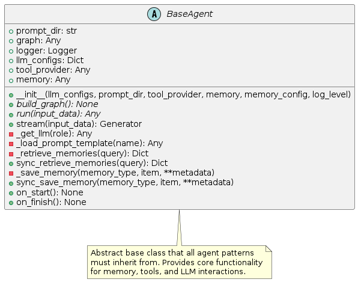

Base Agent
The BaseAgent class is the foundation of all agent patterns in the library. It provides the core functionality and interfaces that every agent pattern builds upon.

Overview
BaseAgent is an abstract base class that defines the common structure and capabilities that all agent patterns share. It handles:
LLM configuration and management
Tool integration
Memory access
Prompt management
Graph building and execution
By standardizing these components, BaseAgent allows pattern implementations to focus on their unique behaviors while maintaining a consistent interface and capabilities.
Core Features
LLM Management
The BaseAgent class provides a unified way to configure and access language models:
Multiple LLM Configurations: Support for different LLM configurations for different roles (e.g., planning, execution, reflection)
LLM Caching: Efficient reuse of LLM instances
Provider Abstraction: Support for different LLM providers (OpenAI, Anthropic, etc.)
# Example LLM configuration
llm_configs = {
"default": {
"provider": "openai",
"model": "gpt-4o",
"temperature": 0.7
},
"reflection": {
"provider": "anthropic",
"model": "claude-3-sonnet-20240229",
"temperature": 0.5
}
}
# The agent will automatically manage these LLMs
agent = SomeAgent(llm_configs=llm_configs)
Tool Integration
The BaseAgent class provides a standardized way to integrate tools:
Tool Provider Interface: Abstract interface for tool providers
Tool Execution: Methods for executing tools and handling results
Tool Discovery: Support for discovering available tools
# Example tool integration
from agent_patterns.core.tools import ToolRegistry
# Create a tool registry
tool_registry = ToolRegistry([some_tool, another_tool])
# Pass to the agent
agent = SomeAgent(
llm_configs=llm_configs,
tool_provider=tool_registry
)
Memory Integration
The BaseAgent class provides built-in memory capabilities:
Memory Retrieval: Methods to retrieve relevant memories
Memory Storage: Methods to save important information
Memory Configuration: Control over which memory types are active
# Example memory integration
from agent_patterns.core.memory import CompositeMemory, EpisodicMemory
# Create memory
memory = CompositeMemory({
"episodic": EpisodicMemory()
})
# Pass to agent with configuration
agent = SomeAgent(
llm_configs=llm_configs,
memory=memory,
memory_config={
"episodic": True # Enable episodic memory
}
)
Prompt Management
The BaseAgent class defines a standardized way to manage prompts:
External Prompt Storage: Prompts stored in files outside of code
Hierarchical Structure: Organized by pattern and function
Template Loading: Methods to load and fill templates
# Prompts are stored in:
# prompts/AgentClassName/PromptName/system.md
# prompts/AgentClassName/PromptName/user.md
# And loaded automatically:
prompt = self._load_prompt_template("ThinkingPrompt")
Graph Building and Execution
The BaseAgent class uses LangGraph for execution flow:
Abstract Graph Building: Each pattern must implement its graph structure
Standard Execution: Common methods for running the agent
Streaming Support: Optional streaming interface for incremental results
Implementation Details
Abstract Methods
The BaseAgent class defines these abstract methods that all patterns must implement:
build_graph(): Define the LangGraph structure for the patternrun(input_data): Execute the agent with the given input
Common Methods
The BaseAgent class provides these common methods:
_get_llm(role): Get an LLM for a specific role_load_prompt_template(name): Load a prompt template_retrieve_memories(query): Retrieve relevant memoriessync_retrieve_memories(query): Synchronous version of memory retrieval_save_memory(memory_type, item, **metadata): Save to memorysync_save_memory(memory_type, item, **metadata): Synchronous version of memory savingon_start(): Lifecycle hook before executionon_finish(): Lifecycle hook after execution
Usage Example
Here’s a simple example of how to use methods provided by BaseAgent in a pattern implementation:
from agent_patterns.core.base_agent import BaseAgent
from langgraph.graph import StateGraph
class MyCustomAgent(BaseAgent):
def build_graph(self) -> None:
graph = StateGraph(MyState)
# Define nodes
graph.add_node("think", self._think)
graph.add_node("act", self._act)
# Define edges
graph.add_edge("think", "act")
graph.add_edge("act", "think")
# Set entry point
graph.set_entry_point("think")
# Compile
self.graph = graph.compile()
def _think(self, state: MyState) -> Dict:
# Get the LLM for thinking
llm = self._get_llm("default")
# Load prompt
prompt = self._load_prompt_template("ThinkingPrompt")
# Retrieve relevant memories
memories = self.sync_retrieve_memories(state.input)
# Generate thinking
response = llm.invoke(prompt.format(
input=state.input,
memories=memories
))
return {"thinking": response.content}
def _act(self, state: MyState) -> Dict:
# Execute tool if needed
if state.tool_to_use:
result = self.tool_provider.execute_tool(
state.tool_to_use,
state.tool_input
)
# Save to memory
self.sync_save_memory(
"episodic",
f"Used {state.tool_to_use} with result: {result}"
)
return {"observation": result}
return {"observation": None}
def run(self, input_data: str) -> Any:
self.on_start()
result = self.graph.invoke({"input": input_data})
self.on_finish()
return result.get("output")
Design Considerations
The BaseAgent class follows these design principles:
Separation of Concerns: Each component has clear responsibilities
Extensibility: Easy to create new agent patterns
Consistency: Common interface across all patterns
Abstraction: Complex mechanics hidden behind simple interfaces
Configuration Over Code: External configuration for flexibility